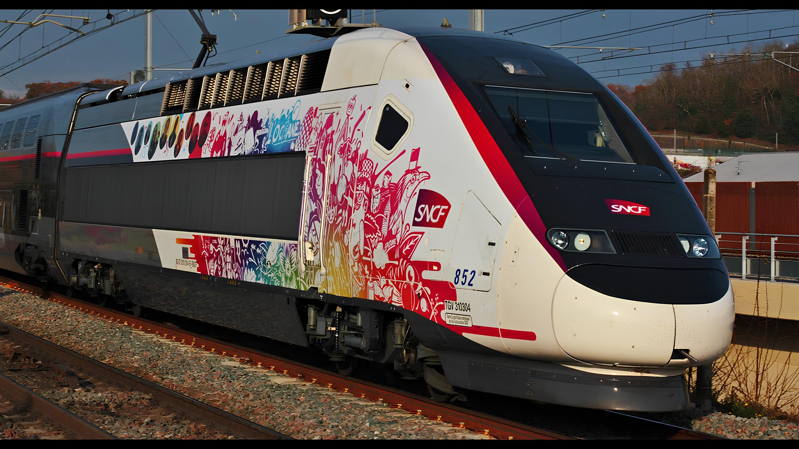
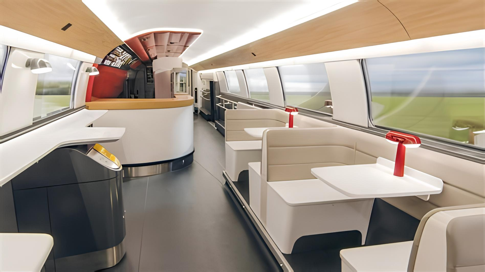
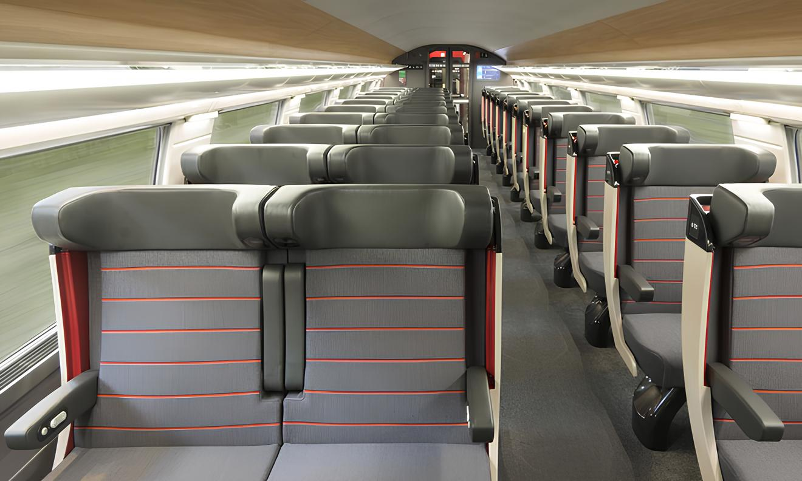
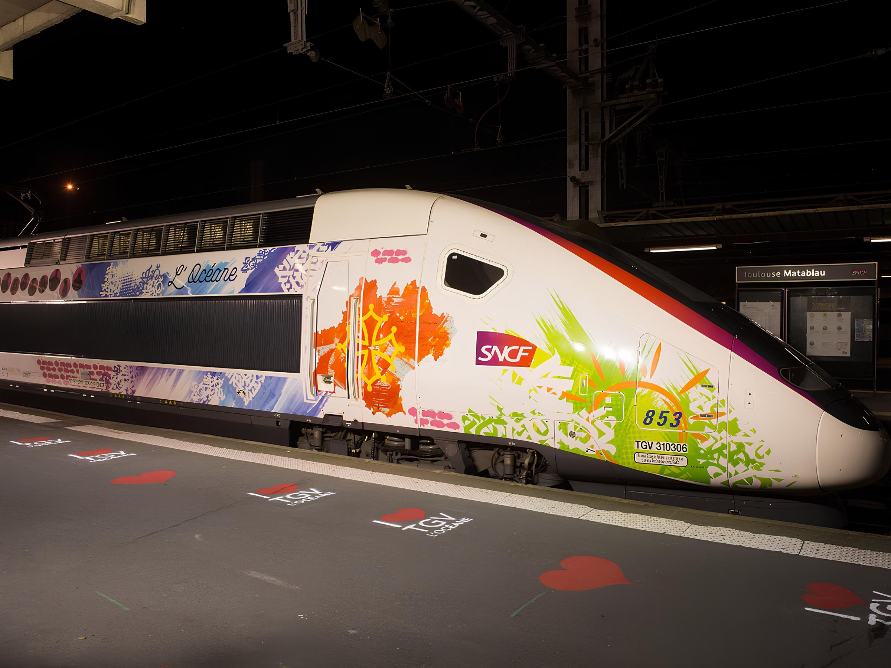

Bienvenue sur SDV : Sans Déraillages Voyages!
Notre nouvelle rame : le TGV Océane !

Le TGV Océane, fleuron de la haute vitesse ferroviaire française,
se distingue par son design extérieur fluide et aérodynamique, conçu pour dissocier la vitesse de la sensation de tressautement.
Sa livrée élégante, avec une ligne carmillon qui file sur toute la longueur du train, reflète son identité dynamique et moderne.
Côté performances, le TGV Océane atteint une vitesse maximale de 320 km/h,
assurant des trajets rapides et confortables entre les grandes villes françaises.
Avec une capacité de 556 sièges, répartis entre 158 en première classe et 398 en seconde classe,
il offre une expérience de voyage agréable et spacieuse.
Parmi ses innovations, le TGV Océane intègre des sièges ergonomiques, dont une majorité est rotative en première classe,
permettant aux passagers de voyager face à la direction du train.
Chaque siège est équipé d'un port USB, d'une tablette rabattable,
d'une liseuse et d'un support pour appareils mobiles, garantissant un confort optimal.
En somme, le TGV Océane allie performance, confort et design, faisant de chaque voyage une expérience unique et agréable.

La rame de restauration du TGV Océane incarne l'élégance et le confort à la française, offrant une expérience culinaire raffinée en plein cœur du voyage. Dès votre entrée, vous serez accueilli par un comptoir en bois véritable, où un menu soigneusement élaboré vous attend. Les produits frais sont exposés dans une vitrine réfrigérée, mettant en valeur la qualité des mets proposés. Pour savourer votre repas, plusieurs options s'offrent à vous :
- Comptoir panoramique : Installez-vous au comptoir surélevé, idéalement situé pour admirer le paysage défilant à grande vitesse.
- Espaces conviviaux : Choisissez l'un des trois espaces équipés de sièges face à face et de tables, parfaits pour partager un moment agréable avec vos compagnons de voyage.

Le TGV Océane offre une expérience de voyage inégalée, alliant confort, modernité et fonctionnalité, tant en première qu'en seconde classe.
-
Première classe :
Les sièges en cuir, conçus par les designers Nendo et AREP, sont à la fois ergonomiques et élégants, offrant un confort optimal pour des trajets agréables.
Chaque siège est équipé de prises électriques et de ports USB, permettant de recharger vos appareils électroniques en toute simplicité.
Les passagers de première classe bénéficient également d'un accès au Wi-Fi TGV INOUI, garantissant une connexion Internet fluide tout au long du voyage.
Pour plus d'intimité, des espaces tels que le "Club Quatre" sont disponibles, offrant des sièges face à face pour des conversations en toute tranquillité. -
Seconde classe :
Les sièges en seconde classe sont également conçus pour le confort, avec des dossiers inclinables et des accoudoirs pour un soutien optimal.
Chaque siège dispose d'une tablette spacieuse, idéale pour travailler ou se détendre.
Des prises électriques et des ports USB sont disponibles, permettant de recharger vos appareils électroniques pendant le trajet.
Des espaces de rangement sont prévus sous les sièges pour les bagages à main, facilitant l'accès et l'organisation de vos effets personnels.

TGV
Les TGV sont des transports de voyage en tram, en bus et en voiture rapide. Ils sont très utilisés pour les voyages à grande distance.
Vous pouvez trouver des informations sur les TGV sur notre site officiel.
Trains régionaux
Les trains régionaux sont des transports de voyage en tram, en bus et en voiture rapide. Ils sont très utilisés pour les voyages à grande distance.
Vous pouvez trouver des informations sur les trains régionnaux sur notre site officiel.
Contact
Pour toute question ou pour vous renseigner sur nos sourires détentes et voyages, n'hésitez pas à nous contacter via notre email.
Ou à nous laisser un message :